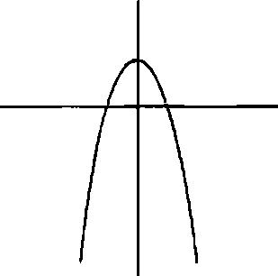

Sonraki perşembe Colin horoz ötüşüne karışan Hasan’ın dua sesiyle uyandı. Yataktan yuvarlanarak kalkıp üstüne bir tişört geçirdi, işedi ve banyodan Hasan’ın odasına geçti. Hasan tekrar yatmıştı, gözleri kapalıydı.
“Daha az gürültülü dua etmen mümkün mü? Yani Tanrı seni fisıldasan bile duyabiliyor olmalı zaten.”
“Hastalık izni alıyorum,” dedi Hasan gözlerini bile açmadan. “Sanırım nezle oldum, hem zaten bir gün izne ihtiyacım var. Çalışmak iyi hoş da şortumla oturup Yargıç Judy seyretmem lazım. Yargıç Judy yi neredeyse on iki gündür filan izlemediğimin farkında mısın? Hayatının aşkından on iki gün ayrı kaldığını hayal etsene.” Dudaklarını sıkan Colin sessizce gözlerini Hasana dikti. Hasan hızla gözlerini açtı. “Ah be. Doğru. Pardon.”
“İzin filan alamazsın. Patronun burada çalışıyor. Evde. Hasta olmadığım anlar.”
“Perşembeleri fabrikada oluyor ya, salak. Biraz daha dikkatli olman lazım. Hastalık izni için mükemmel bir gün. Ruhsal pillerimi şaıj etmem gerek.”
“Bir yıldır pillerini şarj ediyorsun zaten! On iki aydır kılını kıpırdatmadın.”
Hasan sırıttı. “Senin işe mişe gitmen gerekmiyor mu?”
“En azından anneni ara da Loyolaya teminat yollamasını söyle. Teminatın son teslim tarihi bir ay sonra. İnternetten senin için bakmıştım.”
Hasan gözlerini açmadı. “Neydi şu kelime ya. Hay Allah, dilimin ucunda. Biii... Buuu... Boo. Hah tabii ya! Bok topakları, soktuğumun delisi. Bok. Topakları.”
Colin aşağı kata inince Hollis’in çoktan kalktığınıbelki de gece hiç yatmamıştıve pembe bir pantolonlu takım giydiğini gördü.
“Dışarıda hava çok güzel,” dedi Hollis. “Sıcaklık en fazla 28 derece olacakmış. Ama perşembelerin haftada bir kez gelmesine inan seviniyorum.”
Colin yemek masasında yamna oturup, “Perşembeleri ne yapıyorsun?” diye sordu.
“Sabahtan fabrikaya gidip işlerin nasıl gittiğine bakıyorum. Öğlen gibi arabayla Memphise geçip depoyu kontrol ediyorum.”
“Depo neden Gutshot’ta değil de Memphis’te?” diye sordu Colin.
“Yahu ne çok soru soruyorsun. Şimdi... Fabrikada çalışanların çoğuyla konuştunuz. O yüzden sizi Gutshot’tald diğer elemanlara yollayacağım, fabrikadan emekliye aynlanlara filan. Yine o dört soruyu soracaksınız ama biraz daha uzun kalın, kibarlıktan yani.”
Colin başıyla onayladı. Kısa süre sessizce oturduktan sonra, “Hasan hasta,” dedi. “Nezle olmuş.”
“Ah zavallım. Tamam, sen Lindsey yle çıkarsın. Bugün biraz araba kullanacaksınız. Kocamışlan ziyaret edeceksiniz.” “Kocamışlar mı?”
“Lindsey öyle diyor. Bradford’daki huzurevindekiler; çoğu Gutshot Tekstilden aldığı emekli maaşıyla geçiniyor. Lindsey eskiden onları sürekli ziyaret ederdi ama sonra şu,” iç geçirdi, “çocukla,” tekrar iç geçirdi, “çıkmaya başladı.” Hollis boynunu koridora doğru uzatıp bağırdı: “LINDSSSSEEEEY! ÇABBBUK KALDIR O KIÇINI!”
Ve Hollis’in gür sesi Lindsey’ye ulaşmak için koridorun sonuna kadar gidip kapak iki kapıyı aşmak zorunda kalmış olsa da Lindsey bir saniye sonra bağırarak karşılık verdi: “SEN GİT DE O LANET KÜFÜR KAVANOZUNA BİR ÇEYREKLİK AT HOLLİS. DUŞA GİRİYORUM.”
Hollis ayağa kalkıp rafta duran kavanoza bir çeyreklik attı, Colinln yanına döndü, kabarık saçlarım karıştırdı ve “Geç kakyorum,” dedi. “Memphis’ten dönmek uzun sürüyor. Telefonum yanımda. DikkatU olun.”
Lindsey hâkî şortu, üstünde GUTSHOT! yazan dar siyah tişörtüyle aşağı indiğinde Hasan kanepeye kurulmuş, Saturday Night Livem tekrarım seyrediyordu.
“Bugünkü kurbanlar kimmiş?” diye sordu Lindsey. “Kocamışlar.”
“Aa ne güzel. Orası benim batakhane sayılır. Hadi kalk bakalım, Has.”
“Kusura bakma, Linds. Hastalık izni aldım.” Ben ona hiç *Linds” demedim, diye düşündü Colin. Hasan televizyondaki bir şeye gülüyordu. Lindsey yüzüne düşen saçım üfledi, Colim kolundan tuttuğu gibi Cenaze Arabası’na sürükledi.
“izin aldığına inanamıyorum,” dedi Colin bir yandan arabayı çalıştırırken. “Soktuğumun gecesinin bir yarısına kadar soktuğumun televizyonunun icadıyla59 ilgili kitap okuyup yorgunluktan geberen benim, soktuğumun iznini koparan o, öyle mi?”
“Neden Hasanla soktuğumun deyip duruyorsunuz ki?” Colin yanaklarım şişirerek nefes verdi. “Norman Mailer’m Çıplak ve 0/«sünü okudun mu?”
“Onun kim olduğunu bile bilmiyorum ki.”
“Amerikalı bir yazar. 1923’te doğmuş. Hasanla tanıştığım sırada okuyordum. Sonra Hasan da okudu çünkü kitap
59 Televizyon bir çocuk tarafından icat edildi. 1920’de ismi hatırlanmaya değer Philo T. Farnsworth, tüm yirminci yüzyd televizyonlarında kullanılan katot ışın tüpünü akıl etti. On dört yaşındaydı. Farnsvvorth ilkini sadece yirmi bir yaşındayken yapmıştı. (Bundan kısa süre sonra da uzun ve seçkin bir kronik alkolizm kariyeri edindi.)
savaşla ilgili, Hasan da aksiyonlumsu kitapları seviyor. Neyse işte, kitap 872 sayfa ve içinde soktuğumun, sokarım veya sokuk gibi kelimeler otuz yedi bin kez geçiyor. Aşağı yukarı her iki kelimeden biri sokmakla ilgili. Her neyse, bir kitabı okuduktan sonra hakkındaki edebî eleştirileri okumayı seviyorum.” “Aman ne şaşırdım.”
“Neyse işte, Mailer kitabı yazdığında ‘sokmak’ kelimesini kullanmamış. Ama yayımcıya kitabı gönderdiğinde elemanlar, ‘Gerçekten çok güzel yazmışsınız Bay Mailer elinize sağlık fakat 1948 senesinde bu savaş kitabım kimse almayacak çünkü içinde, atılan bombalardan çok küfür geçiyor,’tarzı şeyler söylemişler. O yüzden Norman Mailer yayımcıya ‘soktuğumun dercesine 872 sayfalık kitabında geçen tüm S’li küfürleri tek tek ‘sok’yapmış. Kitabı okurken Hasana bu hikâyeyi anlatmıştım, o da Mailer’a bir nevi saygı gösterisi olarak soktuğumun demeye başladı... Hem sınıfta başım derde sokmadan da söyleyebiliyorsun.”
“Güzel hikâyeymiş. Bak gördün mü? Hikâye anlatabiliyormuşsun,” dedi Lindsey yüzünde yıldızsız gecede padayan beyaz maytaplar gibi bir gülümsemeyle. “Alınacak bir ders yok, romantizm ve macera da içermiyor ama en azından düzgün bir öykü ve hidrasyona dair derin düşüncelerini paylaşmadın.” Colin göz ucuyla onun gülümsediğini görebiliyordu. “Sola dön. Sonsuza kadar bu soktuğumun yolundan gidip sonra... bir dakika bekle, yavaşla, şu Chase’in arabası.”
Karşı şeritten iki renkli bir Chevy Bronco yaklaşıyordu. Colin gönülsüzce Cenaze Arabası’m durdurdu. Diğer arabayı
ÖC kullanıyordu. Colin pencereyi açarken ÖC de aynısını yaptı. Lindsey erkek arkadaşına bakabilmek için Colinin üstünden eğildi. “Selam, Lassie,” dedi ÖC.
“Hiç komik değil,” dedi Lindsey, önde oturan Chase kahkahalara boğulurken.
“Chase’le birlikte bu akşam kampta Fulton’la buluşuyoruz. Sen de gelir misin?”
“Bu akşam evde oturacağım,” dedi Lindsey ve Colin’e dönüp, “Gidelim,” diye ekledi.
“Yapma, Linds. Takılıyordum sadece.”
“Gidelim,” dedi tekrar ve Colin gaza basıp uzaklaştı.
Colin neler olduğunu tam soracaktı İd Lindsey ona dönüp olanca sükûnetiyle konuştu: “Önemli bir şey değil... Aramızda bir şaka. Her neyse, defterdeldleri okudum. Hepsini anlamadım ama en azından her şeye baktım.”
Colin ÖC’le yaşanan tuhaflığı anında unutup, “Ne düşünüyorsun peki?” diye sordu.
“Öncelikle, sen buraya ilk geldiğinde konuştuğumuz şeyleri düşündürdü. Hani sana önemli olmanın kötü bir fikir olduğunu düşündüğümü söylediğim zamanı. Sanırım o lafimı geri alacağım çünkü notlarına bakarken Teoremini geliştirmenin bir yolunu bulmak istedim. Düzeltmeye ve ilişkilerin bir şablon olarak görülebileceğini sana kanıtlamayı fena kafayı taktım. Yani işe yaraması lazım, insanlar o kadar öngörülebilir ki. Sonra Teorem senin olur, bizim olur ve ben... evet, bu kulağa manyakça geliyor. Her neyse, sanırım azıcık da olsa önemli olmak istiyorum; Gutshot dışında da tanınmak Yoksa buna bu kadar kafa yormazdım. Belki burayı terk etmeden tanınmak istiyorumdur.”
Colin bir dur tabelasına yaklaşırken yavaşladı ve ona baktı. “Üzüldüm,” dedi.
“Neye üzüldün?”
“Düzeltememiş olmana.”
“İyi de düzelttim ki.”
Colin tabelaya beş metre kala frenlere asılıp, “Emin misin?” dedi. Lindsey gülümsemeye devam ediyordu. “Eh, söylesene,” diye yalvardı Colin.
“Tamam, TAM anlamıyla düzeltmedim ama bir fikrim var. Matematiğim çok kötü... Yani gerçekten, gerçekten kötü o yüzden yanlışsam söyle ama sanki formülün göz önünde bulundurduğu tek etmen kişinin Terk Eden/Terk Edilen ölçeğinde nerede olduğu gibi görünüyor, değil mi?”
“Evet. Formül buna dayanıyor zaten. Terk edilmekle ilgili.” “Tamam da ilişkideki tek etmen bu olamaz ki. Mesela yaş meselesi. Dokuz yaşındayken yaşadığın ilişkiler, kırk bir yaşında yumurtaların kuruyup gitmeden önce ümitsizce evlenmek isterken yaşayacağın ilişkilerden daha kısa, daha az ciddi ve daha gelişigüzel olmalı, değil mi?”
Colin başını Lindsey’den, önünde kesişen ve tamamen metruk görünen yollara çevirdi. Bir süre düşündü. Artık o kadar bariz görünüyordu ki... Pek çok keşif gibi. “Daha fazla değişken,” dedi heyecanla.
“Aynen. Dediğim gibi, ilk başta yaş geliyor. Ama işin içine daha pek çok şey giriyor. Kusura bakma ama çekicilik önemli.
Mesela bir çocuk vardı, Donanmaya girdi ama geçen sene son sınıftaydı. Sanki mermerden oyulmuş gibi müthiş kaslı bir vücudu vardı, yani Colin’i seviyorum tamam ama o çocuk inanılmaz seksiydi, ayrıca hem çok tadıydı hem de modifiye bir Montero kullanıyordu.”
“O çocuktan nefret ediyorum,” dedi Colin.
Lindsey güldü. “Evet, görsen nefret ederdin sahiden. Her neyse, kendisi Terk Eden dediğin tipin vücut bulmuş haliydi. Kendini 4Y alanında uzman ilan etmişti: Yakala, Yokla, Yat, Yolla. Ancak Orta Tennessee’de kendisinden daha seksi olan tek kişiyle çıkma hatasına düştü: Katrina. Ve görüp görebileceğin en yapışkan, mı^htaç, sızlanıp duran köpek yavrusuna dönüşünce Katrina o^u ;Çerk etti.”
“Ama olay sadece fiziksel çekicilik değil,” dedi Colin cebinden kalemiyle defterini çıkarırken. “Birisini ne kadar çekici bulduğun ve onların seni ne kadar çekici bulduğu. Mesela çok hoş bir kız var diyelim ama hadi oldu da benim tuhaf bir fetişim var ve on üç ayak parmaklı kızlardan hoşlanıyorum. Kızın on parmağı varsa Terk Eden kişi ben olabilirim, tabii bir de cılız, kabarık saçlı ve gözlüklü erkeklerden hoşlanıyorsa.” “Ve gerçekten yeşil gözlü,” diye ekledi Lindsey lakayıt bir tavırla.
“Ne?”
“Sana iltifat ediyordum.”
“Hu. Benimkiler. Yeşil. Evet ."Aferin, Singleton. Aferin.
“Her neyse, bence çok daha karmaşık olması gerekiyor. O kadar karmaşık olacak ki benim gibi bir matematik özürlüsü kesinlikle anlayamayacak.”
Arkalarına yanaşan bir araç koma çalınca Colin araba kullanma işine geri döndü, huzurevinin mağaramsı otoparkına girdiklerinde beş değişken üstünde uzlaşmaya varmışlardı:
Yaş (A)60
Popülerlik Değişkeni (C)61 Çekim Değişkeni (H)62 Terk Eden/Terk Edilen Değişkeni (D)63 İçedönüklük/Dışadönüklük Değişkeni (P)64
60 Bu değişkeni saptayabilmek için Colin iki insanın ortalama yadını alıp bundan beş çıkarıyordu. Bu arada bu sayfadaki tüm dipnotlar matematik içerdiğinden okumak kesinlikle zorunlu değildir.
61 Bunu saptamak için Colin A Kişisi ile B Kişisi arasındaki popülerlik farkını 1 ila 1.000 arasında değişen bir ölçekte (tahmin!) hesaplayıp 75’e bölüyordu. Kız daha popülerse pozitif sayı; erkek daha popülerse negatif sayı.
62 Kişilerin birbirine karşı hissettikleri çekim farkına dayanarak 0 ila 5 arasında bir sayı verilerek hesaplanıyordu. Erkek kain çekimine daha çok kapılmışsa pozitif; tam tersi geçerliyse negatif sayı.
63 0 ila 1 arasında, Terk Eden/Terk Edilen aralığındaki iki insanın arasındaki göreli mesafe. Erkek daha çok Terk Eden tarafındaysa negatif; kız aynı du’ romdaysa pozitif sayı.
64 Teorem bağlamında bu, O'dan 5 e kadar çıkan bir ölçekte iki insanın arasındaki girişkenlik farkını gösteriyordu. Eğer loz daha dışadönükse pozitif sayı; erkek öyleyse negatif sayı.
Camlan kapalı arabanın içinde oturdular, hava sıcak ve yapış yapıştı ama boğucu değildi. Colin olası yeni konsepderi not alıp matematiğini Lindsey’ye açıklarken o da öneri yapıyor ve çizimlerini izliyordu. Yarım saat içinde birkaç Katilerine hakkındaki “kız ondan ayrıldığı için suratı asık” grafiğini65 kabaca halletmişti fakat zamanlamayı tutturamıyordu. Hayatından aylar götürmüş olan XVIII. Katilerine, V. Katherine’in kollarında geçirdiği 3,5 günden daha uzun vaktini almış veya ondan daha önemliymiş gibi görünmüyordu. Çok basit bir formül yaratmıştı. Ve hâlâ tam anlamıyla rastgele işliyordu. Çekim değişkeninin karesini alsam ne olur? Şuraya bir sinüs dalgası veya kesir koysam nasıl olur? Formülü, nefret ettiği matematik gibi değil, çok sevdiği dil gibi görmesi gerekiyordu.
Bunun üstüne formülü bir iletişim çabası olarak düşünmeye başladı. Değişkenler içinde kesirler yaratmaya başladı, böylece grafiğini çıkarmak daha kolay olacaktı. Değişkenleri yerleştirmeden önce farklı formüllerin Katherine’leri nasıl resmedeceğini görmeye başlamıştı ve çalışmaya devam ederken formül gitgide karmaşıklaştı, ta ki neredeyseembesil gibi görünmeden bunu nasıl dile getirebilirdi kİ?güzel görünmeye

başlayana kadar. Park ettiği arabanın içinde geçen bir saatin sonunda formül şöyle görünüyordu:
“Snırım bu hayli yakın,” dedi sonunda.
“Ve ne olduğunu zerre kadar anlamıyorum, yani bence gayet başardın!” Lindsey güldü. “Hadi, gidip kocamışlarla takılalım.”
Colin huzurevine daha önce sadece bir kez gitmişti. On iki yaşındayken bir hafta sonu babasıyla birlikte Peoria, Illinois’ye gitmiş, komaya girdiği için pek hoşsohbet olmayan büyük büyük halası Esther’i ziyaret etmişti.
Bu yüzden Sunset Acres’ı görünce hayrete düştü. Dışarıdaki çimenliğin üstüne kurulu bir piknik masasında, hepsi geniş siperlikli hasır şapka takmış dört kadın kâğıt oynuyordu. Kadınlardan biri, “Şu Lindsey Lee Wells mi?” diye sorunca Lindsey’nin yüzü aydınlandı ve masaya seğirtti. Kadınlar Lindsey’ye sarılmak için kartlarım bırakıp onun tombul yanaklarını sıktılar. Lindsey hepsini ismen tanıyorduJölene, Gladys, Karen ile Monave Colinl onlarla tanıştırınca Jölene şapkasını çıkanp yüzünü yellemeye başladı. “Aman aman 66
66 Bu, matematik sayılmaz çünkü formülün güzel göründüğünü düşünmek için nasıl işlediğini veya ne anlama geldiğini bilmek gerekmiyor.
Lindsey, erkek arkadaşın sahiden de hoşmuş. Artık bizi neden ziyarete gelmediğin belli oldu,” dedi.
“Aa Jölene, o erkek arkadaşım değil. Artık eskisi kadar sık gelemiyorum, özür dilerim. Okulla ilgili yapacak çok işim vardı, hem Hollis beni markette köpek gibi çalıştırıyor.”
Bunun üstüne Hollis’ten bahsetmeye başladılar. Sormak için geldikleri dört soruyu sormaya başlayamadan önce on beş dakika geçmişti ama Colin önemsemiyordu çünkü ilk olarak Jölene onun “hoş” göründüğünü düşünüyordu, İkincisi de hayli rahat yaşlılardı. Mesela teninde kahverengi lekeler ve sol gözünde gazlı bezden göz bandı olan Mona, “Sizce Gutshot’ı özel kılan ne?” sorusuna, “Eh en başta bizim fabrikanın gayet güzel bir emeklilik planı var. Otuz yıldır emekliyim ve Hollis Wells hâlâ alt bezlerimin parasım veriyor. Evet doğru duydun, bez kullanıyorum! Güldüm mü altıma yapıyorum,” diye gülerek cevap verdikten sonra rahatsız edecek kadar fazla kahkaha atmıştı.
Ayrıca Colin, kocamışlann arasında Lindsey’nin bir çeşit rock yıldızı muamelesi gördüğünü fark etmişti. Geldiğinin haberi binaya yayıldıkça giderek daha fazla insan dışarıdaki piknik masalarına doluşup Lindsey’nin çevresinde dört dönüyordu. Colin birinden diğerine gidip sorulara verdikleri yanıtlan kaydediyordu. Sonunda oturup Lindsey’nin insanlan ona yollamasına izin verdi.
En çok Roy VValker’la yaptığı konuşma hoşuna gitmişti. “Yahu bir insan neden benimle ilgili bir şeyler duymak ister aldım almıyor ama seve seve konuşurum tabii,” demişti Roy.
Tam da Colin’e Gutshot Tekstildeki gece vardiyası müdürü olduğu zamanlardan bahsetmek üzereydi ki bir anda durup başka konu açmıştı: “Bizim kızı ne çok seviyorlarrbaksana. Bizim elimizde büyüdü. Eskiden onu haftada en az bir kez görürdüm... Bebekliğini gördük, tıpatıp oğlan çocuğuna benzediği zamanlan gördük, mavi saçlı hallerini gördük... Bana her cumartesi bir tane Budvveiser aşınrdı, canım benim. Oğlum bak, sana tek bir şey söyleyeyim,” dediğinde Colin yaşlıların hep tek bir şey söylemeye bayıldıklarını düşündü, “bu dünyada bazı insanları ne olursa olsun ebediyen sevebiliyorsun.”
Colin bunun üstüne Roy’la Lindsey’nin yanma gitti. Lindsey rahat bir tavırla saçını parmağına doluyor ama bir yandan tüm dikkatiyle Jolene’e bakıyordu.
“Ne dedin Jölene?” *''
“Helen’a, annenin Bishops Tepesindeki sekiz yüz dönümlük araziyi benim oğlana satacağım söylüyordum.”
“Hollis, Bishops Tepesi’ndeki araziyi mi satıyor?”
“Evet, Marcus’a. Galiba Marcus oraya ev yaptırmak istiyormuş, küçük bir... adına ne diyordu unuttum şimdi.” Lindsey gözlerini kısıp iç geçirdi. “Uydu kent mi?” diye sordu.
“Hah öyle dedi. Uydu kent. Tepenin oraya yapacakmış, sanırım. Manzarası güzel en azından.”
Lindsey o andan sonra pek konuşmadı, kocaman gözleriyle huzurevinin ardındaki araziye doğru bakıyordu. Colin oturup yaşlıların sohbederini dinliyordu, sonunda Lindsey kolunu dirseğinin biraz üstünden tutup, “Artık gidelim,” dedi.
Cenaze Arabası’mn kapılarını kapadıkları anda Lindsey kendi kendine konuşur gibi, “Annem asla arazi satmaz. Asla. Niye böyle bir şey yapıyor ki?” diye mırıldandı. Colin o anda Lindsey’nin Hollis’e daha önce hiç anne demediğini fark etti. “O herife niye arazi satsın ki?”
“Belki paraya ihtiyacı vardır,” diye fikir yürüttü Colin.
“Benim kafamda deliğe ne kadar ihtiyacım varsa onun da paraya o kadar ihtiyacı var. O fabrikayı yaptıran benim büyük büyükbabam. Dr. Fred N. Dinzanfar. Paraya ihtiyacımız yok, inan bana.”
“Arap mıydı?”
“Ne?”
“Dinzanfar.”
“Hayır, Arap değildi. Alman mıymış neymiş. Her neyse, Almanca biliyordu... Hollis de biliyordu, ben de o yüzden öğrendim. Neden sürekli böyle saçma sapan sorular soruyorsun?”
“Aman be, özür dilerim.”
“Of her neyse, kafam karıştı o kadar. Hem bana ne. Diğer konuya geçiyorum. Bizim kocamışlarla takılmak eğlenceli, değil mi? Söyleseler inanmazsın ama gerçekten kafa dengiler. Eskıuen neredeyse her gün evlerine misafirliğe giderdim, çoğu huzurevinde değildi. Bir evden diğerine gidiyordum, tıka basa yemek yiyordum, sürekli bililerine sarılıyordum. O zamanlar arkadaşöncesi dönemlerimdi.”
“Sana bayıldıkları ortada,” dedi Colin.
“Bana mı? Hatunlar senin ne kadar yakışıklı olduğundan bahsedip durdular asıl. Seksen yaş üstü piyasasının peşinden
koşmayarak koskoca bir Katherine demografiğini elinden kaçırıyorsun.”
“Bizim çıktığımızı sanmaları komikti,” dedi Colin ona şöyle bir bakarak.
“Nesi komikti?” diye sordu Lindsey gözlerini ondan ayırmadan.
“Şey...” dedi Colin. Dikkatini yola veremediği için Lindsey’ nin eşsiz gülümsemesinin çok minik bir versiyonuyla ona baktığını görebilmişti.